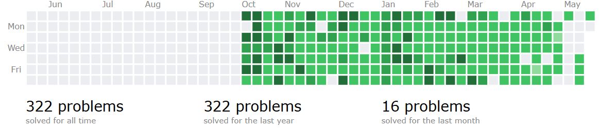
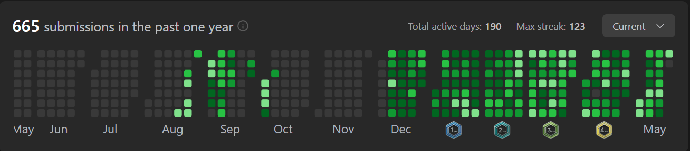

Bengaluru, India
Aspiring AI & ML Engineer
Building production-grade ML systems, fine-tuned LLMs, and RAG pipelines. Exploring the universe of Deep Learning and MlOps.
I'm Kushagra, a second-year Robotics & AI engineering student at Dayananda Sagar College of Engineering, Bengaluru. I build deployable AI and ML systems.
My focus is practical AI: fine-tuning large language models, building RAG pipelines, exploring MCPs, and shipping custom agentic systems.
I am actively seeking AI/ML internship opportunities and will be available to begin by mid-July 2026. My goal is to gain hands-on exposure to real-world work environments while deepening my technical and industry understanding.
Two public heatmaps, one simple rule: keep showing up until the graph starts speaking for you.


Fine-tuned Microsoft Phi-2 (2.7B parameters) on a synthetically generated dataset of ~400 resume-job description pairs, produced via Groq API (llama-3.3-70b-versatile). Trained with TRL's SFTTrainer using BF16 precision. Evaluated with ROUGE and BERTScore metrics.
An end-to-end agentic AI system combining Retrieval-Augmented Generation (RAG), tool use, and memory for grounded, reliable responses. Integrates document retrieval, web search, calculator, and semantic memory into a modular agent loop.
FastAPI service that extracts structured data from PDF resumes using PyMuPDF and regex. Deployed live on Render. Includes TF-IDF based job description matching with cosine similarity scoring.
3D computer-aided design (CAD) modelling powered by a GNN surrogate model. Multi-threaded load injection and heatmap shape mismatches for real-time deformation visualization.
Solved 700+ problems across LeetCode, CodeChef, and Codeforces. Maintains a long active streak with consistent daily practice in C++.
Successfully fine-tuned a 2.7B parameter model (Phi-2) end-to-end: synthetic data generation, BF16 training, and quantitative evaluation with ROUGE & BERTScore.
Shipped a FastAPI resume parser to production on Render — real users, real traffic, real uptime. Complete with Docker and pytest coverage.
Submitted a research-grade abstract for a tokenized AI dataset marketplace with novel hashchain provenance mechanism at an AI/ML track hackathon.
Consistent daily commits across ML projects, backend systems, and competitive programming solutions. Portfolio growing every week.
Consistently learning across AI and ML fundamentals, from model training and RAG systems to deployment workflows. Curious, persistent, and improving one project at a time.
Built complete ML pipelines from data generation to model deployment — including debugging bf16/fp16 incompatibilities and adapter architecture mismatches.
Consistent daily streaks across development, competitive programming, chess, language learning, and reading — all while managing a demanding engineering curriculum.
Daily problem solving on LeetCode and Codeforces. Focus on graph theory, greedy algorithms, game theory, and combinatorics in C++. More than a hobby — a discipline.
Deep-reading across philosophy, finance, and self-mastery. Favourites include The Untethered Soul, Man's Search for Meaning, The Richest Man in Babylon, and The Gentleman.
Turning ideas into deployed software. The satisfaction of seeing an ML model answer correctly or a FastAPI endpoint respond in milliseconds never gets old.
Chess as mental exercise. Pattern recognition and long-horizon planning — skills that translate directly to algorithm design and system architecture.
View Chess.com ProfileFascinated by the intersection of AI and physical systems. From physics simulators to GNN surrogate models, exploring how ML can model the real world.
Currently learning French and German on Duolingo. Building discipline through daily streaks — the same approach applied to coding, reading, and chess.
View Duolingo ProfileOpen to ML Engineer and Backend Engineer internship opportunities from mid-July 2025.